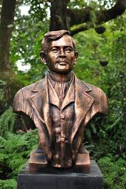

Algeo L. Fernandez
BS in Information Technology
Zamboanga Peninsula Polytechnic State University
Rizal Activities
Activity 1: Rizal Essay
Submitted Feb 7, 2025
300-word essay on the importance of studying the life, works, and writings of José Rizal.
View EssayActivity 2: Rizal Bill Analysis
Submitted May 18, 2025
Analysis of the Rizal Bill (Republic Act No. 1425) and arguments for/against it.
View AnalysisActivity 3: Heroes Criteria
Submitted May 18, 2025
Criteria for recognizing heroes and how Rizal meets these standards.
View ActivityReflection: Rizal's Legacy
Submitted June 1, 2025
Personal reflection on José Rizal's enduring impact on Philippine society and national identity.
View ReflectionRizal Gallery
A visual collection of José Rizal's works and memorabilia
Noli Me Tangere (1887)
El Filibusterismo (1891)
Mi Último Adiós (1896)

Rizal's Sculptures

Rizal's Drawings
Historical Photograph